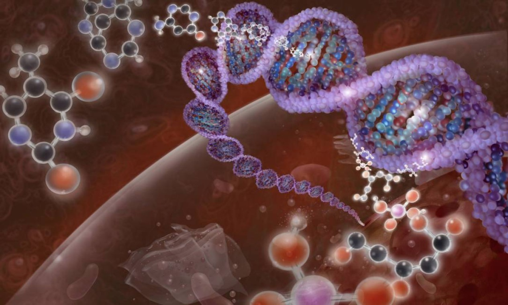

2° Notícia
A busca por quiralidade e cadeias de RNA como provas definitivas de vida extraterrestre
Astrobiólogos da NASA destacaram que a simples detecção de aminoácidos em asteroides (como o Bennu) não basta para provar vida, pois essas moléculas surgem de forma abiótica. O foco atual voltou-se para a quiralidade molecular e para compostos frágeis.
- O avanço: Cientistas definiram critérios combinados para validar bioassinaturas, priorizando a predominância de um único tipo de orientação molecular, a presença de isótopos leves e a busca por nucleotídeos ou cadeias de RNA.
- Por que é incrível: Como cadeias de RNA se decompõem rapidamente na escala geológica, encontrá-las em missões futuras (como a sonda Dragonfly em Titã) representaria uma evidência direta de atividade biológica ativa.
